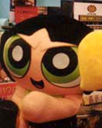
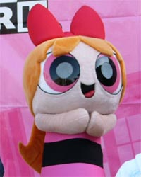
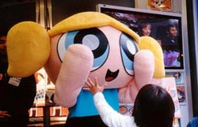
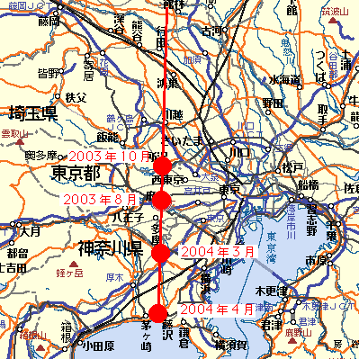

パワパフ着ぐるみの軌跡
パワパフの着ぐるみが出現したであろうイベントの記録をまとめてみました。
着ぐるみには2種類あるようで、ここでは、寸劇を行うタイプを『アクション着ぐるみ』。
主に握手会や撮影会などで使われるものを『イベント着ぐるみ』と名付けて分類してみました。
■イベント歴
| 開催日 |
場所 |
イベント |
出演着ぐるみ |
主催 |
補足 |
| ■2001年 |
| 2001年3月22～25日 |
東京：東京ビッグサイト |
東京おもちゃショー2001 |
イベント着ぐるみ |
SEGATOYS |
セガがおもちゃ関連を出すので、ブースが出来ていた |
| 2001年5月3日 |
東京：原宿アンテニュール |
パワパフイベント |
イベント着ぐるみ |
原宿アンテニュール・テレビ東京 |
「アンテニュール」はテレビ東京アンテナショップなので特別イベントが行われた模様。「アンテニュール」は2002年9月1日閉店した。 |
| 2001年5月26日 |
東京：原宿キデイランド |
パワパフイベント |
イベント着ぐるみ |
キデイランド |
|
| 2001年8月2～14日 |
東京：伊勢丹新宿店 |
パワーパフガールズフェスティバル |
イベント着ぐるみ |
|
おそらくPpG関係では最大のイベント。
記念撮影会やショーやら巨大なバルーンオブジェがあったりと、凄かったようだ。
この時の巨大オブジェは外国産で（おそらく米国）空輸されてきたそうです。今は諸外国のイベントなどを回っているかもしれません。 |
| 2001年12/15～12/25 |
東京：青山スパイラルガーデン |
キャラデパ展 |
イベント着ぐるみ |
キャラデパ展事務局・小学館 |
国内外のキャラもののイベント。PpGも参加。
その後キャラ博と名を変えて毎年やってたりするが、PpGの着ぐるみが参加しているかは不明。 |
| ■2002年 |
| 2002年6月1、2日 |
東京：代々木公園 |
エコライフフェア2002 |
イベント着ぐるみ |
環境省 |
この年、「Re-Style」のイメージキャラにPpGが採用されたため、イベントにも登場。
6月1日は握手・写真撮影会。6月2日ににてショーが行われた（環のくらしパビリオン・ステージ）
ショーが どのような内容かは不明。「パワパフと考えるゴミ問題」というテーマだったので、現在の寸劇とは違うものだと思われる。
|
| 2002年8月1日～8月14日 |
東京：伊勢丹新宿店 |
パワパフムービーフェア |
アクション着ぐるみ |
|
映画公開記念でのイベント。
アクション着ぐるみはこれが初出か？
アクション着ぐるみだが、寸劇はしなかったようだ。
丹相模原店や八木橋店でも行われたようだが、詳細不明。 |
| 2002年8月 |
札幌パルコ 8月2～11日
津田沼パルコ 7月26日～8月10日
松本パルコ 8月2～18日
調布パルコ 8月2～11日
渋谷パルコ 8月2～11日 |
パワパフminiショップオープン記念イベント |
イベント着ぐるみ |
パルコ |
パルコにPpGミニショップが開店したことの記念イベント。映画公開の勢いもあるのだろう。
ソニーがPpGグッズを出し始めた絡みもあるような気がする。
|
| 2002年8月12日 |
東京：池袋サンシャイン噴水広場 |
パワーパフガールズショー |
アクション着ぐるみ |
|
おそらく寸劇はこれが初演。
2002年の夏は期間がかぶりまくりで、中の人モウレツに忙しそうだ。 |
| ■2003年 |
| 2003年7月19日～8月31日 |
大阪：大阪南港ATCホール |
ワーナースタジオパーク |
イベント着ぐるみ |
ワーナー |
給水塔広場にて環境省「パワパフと考えるゴミ問題」パワパフショー。2002年のエコライフフェア2002と同じものと思われる。
8/2～15が「カートゥーン ネットワーク ウィーク」で、その期間でのみ行われた。 |
| 2003年7月23日～7月25日 |
東京：東京ビッグサイト |
ケーブルテレビ2003 |
アクション着ぐるみ |
社団法人日本ケーブルテレビ連盟、社団法人日本CATV技術協会 |
カートゥーンネットワークのステージで着ぐるみショー。
ラグラッツの着ぐるみもいたようだ。 |
| 2003年8月 |
東京：府中の某デパート |
パワーパフガールズショー |
アクション着ぐるみ |
J-COM Broadband 東京 |
『パワーパフガールズ＆も～っと！おジャ魔女どれみショー』としてデパートの特設ステージにて |
| 2003年10月25、26日 |
埼玉：所沢航空記念公園 |
所沢市民フェスティバル |
アクション着ぐるみ |
（株）シティケーブルネット 「メディアッティ」 |
野外ステージでショー。会場は他のステージにくらべ広い。これも地域ケーブルTVがらみ。 |
| ■2004年 |
| 2004年3月28日 |
東京：南町田グランベリーモール |
パワーパフガールズショー |
アクション着ぐるみ |
イッツ・コミュニケーションズ |
これもまた地域ケーブルTVの関連イベント。ショーのあとの握手会は先着整理券持参者のみ。 |
| 2004年4月4日 |
神奈川：湘南モールフィル |
パワーパフガールズショー |
アクション着ぐるみ |
J-COM Broadband 湘南 |
やはりケーブルTV近くは要チェックか。
えらく狭い場所での公演。しかし客入りはまずまず。握手会はなし。 |
■着ぐるみ比較分析
| イベント着ぐるみ |
 |
 |

|
|
|
おそらく最初に完成したモデル。かなりの巨体（多分2mくらいあるんじゃないでしょうか？）。
頭部は丸みを帯びていて、髪の毛がぶ厚く、口は平面的。バターカップの怒り顔がクッキリハッキリしているのが特徴。服の黒帯部分も長め。手も長い。（というより、全体に頭身が高めなのかも）
正面で見たときにアニメの絵に近い造形になるようデザインされているっぽい。
ブロッサムモデル：（この写真ではわかりにくいが）横に髪が少なく、後ろ髪が短い（服の帯より上）。
バブルスモデル：分け目が若干浅く、やはり横髪がない。うしろ頭にバッテンがない。
バターカップモデル：一番出来がいいかもしれない。さらに、バタの中の人はサービス精神が旺盛なのか評判がいい。
「中の人」は固定で、それぞれ決まった人が演じいているそうだ。このタイプに遭遇したら、怒り顔とはうらはらに愛想のいいバターカップに会えることでしょう。
|
| アクション着ぐるみ |
|  |
 |

|
|
|
主に寸劇で使われるモデル。顔がやや四角い。口の舌が半立体で、ななめってるのが特徴。身長はイベント着ぐるみより小さいようだ（170cmくらいか？）。アクションすることを考えて軽量化したのかも。
個別なつくりはともかく、全体としてのプロポーションバランスはこちらのほうがいいかもしれない。手が短めだが、かわいいので良し。ただ、腕組みは出来なさそうだ。
前後左右どこからから見てもアニメの絵に近い印象になるようにデザインされているようだ。横から見た時にそれがよくわかる。
ブロッサムモデル：イベント着ぐるみがかなり後方まで横髪がないのに比べ、横髪の分量が多い。なおかつ後ろ髪が長め（服の帯下まである）。リボンも若干長いか。
ブロッサムモデル：イベント着ぐるみと同じくバブルスの後頭部にバッテンがない。（これだけが残念だ）
バターカップモデル：よく見るとバターカップにもちゃんと眉間皺があるのだが、目立たない。よって、遠目には怒っている風にはみえない。
 
なにより、モジョと博士の着ぐるみが存在するのが、最大の違いかもしれない。
|
■着ぐるみ比較分析2 -握手の考察-
イベントでは握手会というものが存在する。しかし、あの指なしパワパフ着ぐるみで「握手」というものが存在しえるのであろうか！？という疑問があったので、ここで考察してみる。
| イベント着ぐるみ |
アクション着ぐるみ |
|

やはり、イベント着ぐるみは巨大である。
それに比例して、「手」もかなり大きい。子供の手からみれば、それは丸太のようでもある。
また、外観からの推測だが、よく言えば「しっかりした作り」。そこに柔軟性はみつけられず、「互いに握りあう」握手は難しいように思える。

握るというより、抱く(笑)
|

小型で運動性能の高いアクション着ぐるみ。
生地が薄いのか、柔軟性が高そうである。この写真を見てわかるように、うっすらと中の人の親指らしき形状が認識できる。
これはどう見ても、握っている！ミトンの手袋のように、親指と四指による「握る」といった動作が可能なようだ。
|
私自身これら着ぐるみと握手したことがないので、断言はできないが、2002年の伊勢丹ムービーフェアにおいて「握手」したとの証言が報告されている。（すなわち、アクション着ぐるみである）
K「ええ、確かに握手しました。ミトン手袋のようで、なかの手の感触が微妙にしたように記憶しています。確かに「手を握ってる」感があるんでが・・・でも、人間の手じゃないんですよ。何とも言えない感触です。」（証言は一部編集しています）
「アクション着ぐるみ」は「握手」可能だった～～ぁぁぁ！
一部気になる表現があるが、「アクション着ぐるみ」なら握手会が存在しうるのである。さすが高機動型。
さて、この調査において奇妙な証言もあったことをここに記しておく。
L「私も握手しました。それでその時気付いたんですけど・・・・・着ぐるみの手の部分から、中の人の指がちょっとだけ出ていたんですよ！！恐るべきことに、それで握手や物をつかんだりしていたようです。」（証言は一部編集しています）
奇っ怪なり！残念ながら我ら調査班が入手した写真からは「指」が出るような「穴」は発見できなかった。まだまだパワパフ着ぐるみには謎が多いようだ。だが、今後の調査でいずれ明らかになるであろう。
ていうか、俺が握手してえええええええええええええよおおおお。
おまけ：
■謎のパワパフライン

それまで、都内でのイベントであったものが、2003年夏から都心郊外にて開催されうようになった。
その出現箇所を地図の上に記してゆくと、不思議なラインが現れる。
これはいったい？？？
謎の秘密結社の陰謀か、はたまたパワパフ神からの啓示か。
今後の動向を見守りたい。
（イベント着ぐるみ写真提供：眠田直さん）
【HOME】【SUGER
& SPICE】
[PR]動画